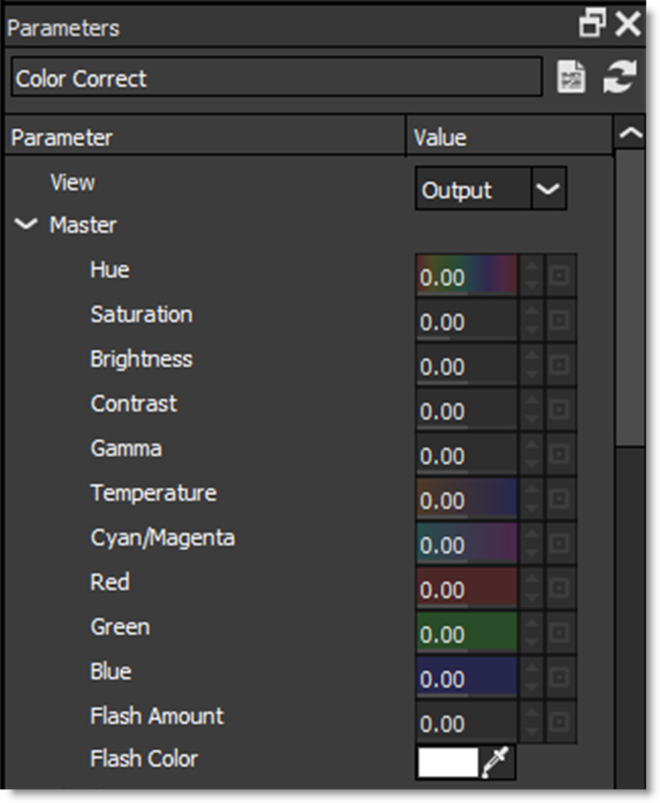

Parameters
The Parameters window allows you to adjust a filter’s parameters which will in turn update and change the image in the Viewer.
Slider controls can be adjusted in the following ways:
• Clicking and dragging on the number field.
• Clicking on the number field, typing in the desired value and hitting Enter.
• Adjust with finer precision by pressing Ctrl/Cmd while dragging the number field.
• Hovering over a numeric field, the Up/Down Arrow keys change the value by 1 unit, Shift+Up/Down Arrow moves by 10 units and Ctrl/Cmd+Up/Down Arrow advances by 0.1 unit.
• Hovering over a numeric field and using Alt+mouse wheel. Use Alt+Shift for a 10x larger change. Use Alt+Ctrl/Cmd for 10x smaller change.
Pop-up menus can be adjusted in the following ways:
• Click on the pop-up menu and make a selection.
• Hover the cursor over a pop-up menu and use the mouse scroll wheel to change the selection.
Create Custom Preset
Creates a custom preset in the Presets window based on the current parameter settings.
To create a new preset, click the Create Custom Preset icon and when the New Preset window opens, enter the desired information and press OK to create the preset.
The newly created custom preset will appear in the Presets window as well as the Custom tab in the Filters window.
Reset to Defaults
Resets all of the parameters for the currently selected preset to the built-in defaults.